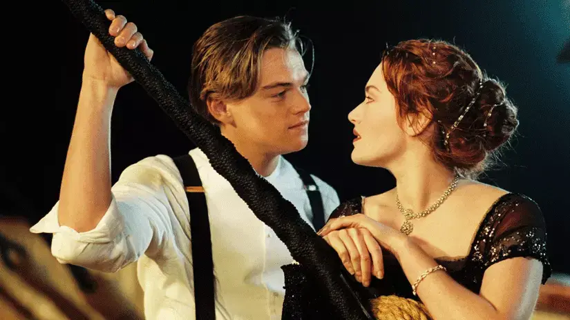
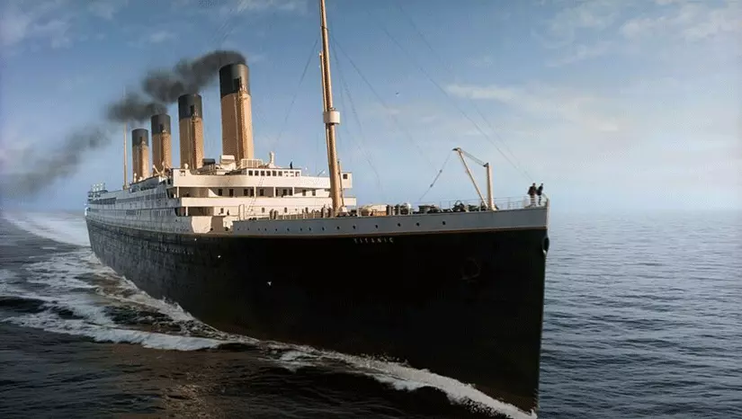

Titanic Geri Dönüyor
Tarih: 2.07.2022 - Yazar: Esra Altun
Titanik, James Cameron'ın yönetmenlik, senaristlik, ortak yapımcılık, ve ortak kurgu yönetmenliğini yaptığı, 1997 yılı Amerikan yapımı epik, felaket, ve romantizm temalı sinema filmi. RMS Titanic'in batışı üzerine kurgulanan filmin başrollerini, geminin felaketle sonuçlanan ilk seyahati sırasında birbirine âşık olan farklı toplumsal sınıflara mensup iki genci canlandıran Leonardo DiCaprio ve Kate Winslet paylaşmaktadır. Cameron'ın filme ilişkin fikri batık gemilere olan büyük ilgisinden kaynaklanmaktadır; trajedinin duygusal mesajını iletmek isteyen Cameron, kayıpla karışık bir aşk hikâyesinin bunu başarmak için zaruri olduğunu düşünmekteydi. Filmin yapımı Cameron'ın RMS Titanic'in kalıntılarını görüntülediği 1995 yılında başladı. 1996'da geçen sahneleri Cameron'ın gemi enkazını görüntülerken kullandığı Akademik Mstislav Keldış gemisinde çekilmiştir. Titanic'in bir kopyası Meksika'daki Rosarito Beach kentinde inşa edilmiş ve batışı canlandırmak için maketlerle bilgisayar ürünü görüntüler kullanılmıştır. Filmin maliyetleri kısmen Paramount Pictures ve 20th Century Fox tarafından karşılanmıştır ve 200 milyon dolarlık bütçesiyle o dönemde tarihteki en pahalı filmdi. Film 19 Aralık 1997 tarihinde sinemalara girmesinin ardından ticari ve eleştirel alanda başarı elde etti. On dört dalda Akademi Ödülü'ne aday gösterildi ve En İyi Film ile En İyi Yönetmen dalları da dahil olmak üzere on bir dalda kazandı. Dünya çapında iki milyar doların üzerinde gişe hasılatı yapan film, bir milyar doları geçen ilk filmdi ve 2009 yılında yine Cameron'ın bir filmi olan Avatar tarafından geçilene kadar olan on iki yıl boyunca gişe hasılatı rekorunu elinde bulundurdu. 4 Nisan 2012 tarihinde filmin üç boyutlu bir versiyonu da trajedinin yüzüncü yılını anmak amacıyla sinemalara girdi.
Lady Gaga ve Bradley Cooper'ın A Star is Born filmi Hollywood'da Titanic etkisi yaratırken, dünyanın en ünlü yolcu gemisi geri dönmeye hazırlanıyor. Üstelik bir Hollywood yapımı olarak değil, en gerçek haliyle... Evet, tarihin en popüler gemisi Titanic. 15 Nisan 1912 sabahı Southhampton’dan New York’a gitmek üzere transatlantik seferini başlattıktan sonra, Newfoundland kıyılarına 600 km uzaklıktaki bir buz dağına çarparak sulara gömüldü. 1500 kişinin hayatını kaybettiğı bu trajedi sayısız kitap, sergi ve efsanelere konu oldu. Geminin ölümsüzeşmesi ise Leonardo DiCaprio ve Kate Winslet'in 1997 yılında başrolleri paylaştıkları, bir Blockbuster yapımı olan Titanic filmine dayanıyor. Bu filmden sonra yediden yetmişe tüm dünyanın kalbini çalan Titanic bugüne kadar hep filmlerle, belgesellere sınırlı kaldı. İkinci bir versiyonunu kimse tasarlamadı. Ya cesaret edilmedi, ya da referansını böylesine dramatik bir hikayeden alan gemi duygusal anlamda ağır geldi. Neyse ki, şeytanın bacağı kırılıyor ve mavi yolculuk alanında 1911 yılından bu yana uzmanlaşan İngiliz şirketi Blue Star Line, Titanic 2'yi inşa etmeye hazırlanıyor. Bloomberg'in haberine göre geminin yapımı 2022 yılında tamamlanacak. İlk seferini Dubai'den başlatması plananan Titanic 2 gördüğümüz, bildiğimiz tarihi geminin aynısı. Hatta New York'a gitmek için Titanic'in rotasını takip edeceği bile konuşuluyor. Aradan 106 yıl geçmesine rağmen Titanic'teki yolcu sınıfı sistemine de sadık kalınmış. Bu gemi ile mavi yolculuğa çıkmak isteyen yolcular farklı kategorilerdeki kamaralarda seyahat edebilecek. Yeni Titanic'te Rose ve Jack'inki gibi sınıf farkını aşabilen bir aşk yaşanır mı, bilemiyoruz. Şimdilik tek bildiğimiz geminin 500 milyon dolara mal olduğu ve 2400 yolcunun haricinde 900 mürettebat ağırlayabileceği.